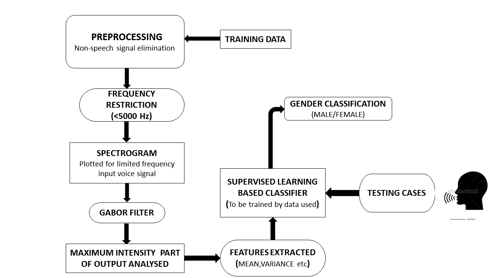

Gender Classification from Speech using Spectrogram and image processing technique
Akash Singh, Roll No.: 150108002, Branch: EEE
;
Sagar Kohli, Roll No.: 150102058, Branch: ECE
;
Somya Parashar, Roll No.: 150102066, Branch: ECE
;
Devesh Prajapat, Roll No.: 150102015, Branch: ECE
;
Abstract
Speech Recognition Technology can be embedded in various real time applications in order to increase the human-computer interaction.
From robotics to health care and aerospace, from interactive voice response systems to mobile telephony and telematics, speech recognition technology have enhanced the human-machine interaction.
Gender recognition is an important component for the application embedding speech recognition as it reduces the computational complexity for the further processing in these applications.Human speech has hierarchical structure to have meaningful information.
Speech is not a sequence of steady state sounds, abruptly changing from one to other.It consists of sentences, sentences can be divided in to words, words are constituted by phonemes which are the basic voice construction elements.
We use language every day without devoting much thought to the process.A study of acoustic characteristics of any language begins with the phonetic Analysis of that language.
Speech is one of the most information-laid signals, speech sounds have a rich and multi-layered temporal variation that convey emotions, words, intention, expressions, intonation, accent, speaker identity, gender, age, style of speaking, state of health of speaker.
The major concern in any language will be the identification, separation and processing of vowels and consonants of that language.
In our study for analysis we are using the pre-recorded samples of various subjects differing in age and gender .
the analysis is carried out with respect to basic acoustic features and spectrogram, to extract formant frequency, pitch and intensity.We present a method that analyzes a two-dimensional magnitude
spectrogram S(f, t) into its local constituent spectro-temporal amplitudes A(f, t), frequencies F(f, t), orientations Θ(f, t), andphases φ(f, t). The method operates by performing a twodimensional
local Gabor-like analysis of the spectrogram, retainingonly the parameters of the 2D-Gabor filter with maximal amplitude
response within the local region.
1. Motivation
In recent years, several studies investigated the use of the spectrogram (or spectrogram-like transformations) as a basis for
extracting perceptual cues from speech . The application domains in which these studies were performed include speech
intelligibility analysis , emotion recognition, and automatic speech recognition. The outcomes of these studies
show that socially informative perceptual cues can be extracted from the spectro-temporal patterns in the spectrogram.
1.1 Introduction to Problem
The objective of this problem is to do spectrogram analysis of speech signal to identify gender from the given signal.
1.2 Figure
Block diagram of the system.

1.3 Literature Review
Write something here.
1.4 Proposed Approach
The problem requires us to do spectrogram analysis of speech signal of various samples to extract features
such as pitch and formant frequencies.For this processing Gabor filter and a method for the extraction of such cues that is
based on the Gabor transform are used. A local decomposition in terms of the (logarithmic) Gabor transform has become one of the main
transforms for feature extraction in image analysis.
2. Proposed Approach
The process of speech sequence segmenting comprises of the following steps:
a. Preprocessing:Preprocessing of speech signals is considered a crucial step in the development of a robust and efficient speech
or speaker recognition system.STE based methods of speech signal segregation utilizes the fact that energy in the voiced region is greater than in the silence/unvoiced region. So, a small window
is taken and the energy of the window calculated; if the total energy of the window is more than the chosen threshold, then samples of the window are retrieved, otherwise dropped.
We conducted two different experiments; first one with a non-overlapping moving window of fixed size, and another with an overlapping moving window of fixed size.
The overlapping moving window technique has been used to prevent valuable information loss.
b. Spectrogram Plotting: Spectrogram is a visual representation of the spectrum of frequencies of sound or other signal as they vary with time or some other variable.The temporal resolution of the spectrogram is defined by a single parameter t, the length of the time segments or time resolution.
The spectrogram is created with a Hanning window and an overlap of t/2.A common format is a graph with two geometric dimensions: one axis represents time or RPM,the other axis is frequency; a third dimension indicating the amplitude of a particular frequency at a particular
time is represented by the intensity or color of each point in the image.Audio would usually be represented with a logarithmic amplitude axis (in decibels, or dB), and frequency would be linear to emphasize harmonic relationships.This process essentially corresponds to
computing the squared magnitude of the short-time Fourier transform (STFT) of the signal s(t) — that is, for a window width w Spectrogram(t,w)=|STFT(t,w)|^2.
c. Gabor Transform: In the log-Gabor method the spectrogram is generated by applying the short-time Fourier transform (STFT) to the speech
signal. The temporal resolution of the spectrogram is defined by a single parameter t, the length of the time segments or time resolution.
The spectrogram is created with a Hanning window and an overlap of t/2.
The input for the log-Gabor transform is the logarithm of the spectrogram, as is common in, for instance, automatic speech
recognition.The log Gabor transform has its basis in the Gabor function, which represents the optimal measurement of location,
frequency and orientation. For the log-Gabor method, we employ logarithmic Gabor functions.A multiresolution filter bank of log Gabor filters provides equal
coverage of the Fourier domain with minimal overlap between the filters. The log-Gabor method employs such a filter bank,yielding a filtered “energy image” of the spectrogram for each
combination of the ns scales and no orientations. For each filteredimage, a specific scale and orientation is retained. Scales can be interpreted as the difference in pixel
period of patterns in the image (e.g. high and low pitch harmonics are spaced at a different pixel distance) and orientations can be vertical (e.g.harmonics), horizontal (e.g. rhythm),
or oriented (e.g. attack and decay).
G(f, t) = A · W(f, t) · cos(2πF(ˆx + Φ)) (1) where xˆ = tcosΘ + fsinΘ (2)
and W(f, t) is a Gaussian-like window (to be defined later). For phase estimation, we will need the notion of a complex Gabor, which will consist of real and imaginary versions of equation 1 in quadrature phasee
G∗(f, t) = A · W(f, t) · ej(2πF (ˆx+Φ)
d. Feature Extraction and Classifier: Maximum intensity part of output is analysed and they are send inside classifier where with the help of k-mean clustering we calculate avearage value of intensity output for male and female voices.
e. Supervised Learning: In k-NN classification, the output is a class membership. An object is classified by a majority vote of its neighbors, with the object being assigned to the class most common
among its k nearest neighbors (k is a positive integer, typically small). If k = 1, then the object is simply assigned to the class of that single nearest neighbor.
The k-nearest neighbours (kNN) model was trained on a large numbers of voice samples to incorporate total variability in feature space. Hence, parameters of the model were set accordingly to classify speakers.
This model was applied on a test data to cluster the 20ms time frames pertaining to individual speakers. For every 1 sec (50 time frames of 20ms each), the mode of the data was found and assigned to the whole 1 sec time frame.
3. Experiments & Results
3.1 Dataset Description
The TSP speech contains over 1400 utterances spoken by 24 speakers (half male, half female). This report describes the TSP speech database.
The database consists of over 1400 utterances spoken by 24 speakers (half male, half female). The data was recorded to Digital Audio Tape in an anechoic room.
The database includes the original samples (48 kHz sampling rate), and also the data filtered and subsampled to different sample rates.
The speech was recorded in an acoustic anechoic room at the Department of Electrical & Computer Engineering at McGill University, Montreal. The microphone was placed on a stand
about 15 cm, slightly off-axis from the speaker. This placement was intended to provide as high a signal-to-noise ratio as possible without excessive “pops” due to breath noises (some pops still
occur in the recordings). The recording gain was kept constant across all recordings.
3.1 Code Link
4. Conclusions
4.1 Summary
Write something here.
4.2 Future Extensions
Write something here.